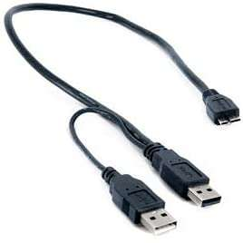

Using hard drives on a Wii U
Wii U games and injects can only be installed to the internal storage of the console or an external hard drive.
The Wii U will format the hard drive in a proprietary format, which can't be read by other devices.
The Wii U will only format up to 2 TB of the drive, you can still connect larger drives though.
Tools like DumpsterU exist, which allow you to dump games and saves from a Wii U formatted drive on your PC.
Any external hard drive from a reputable brand will work, but most of them need a Y-Cable if they're not externally powered. A Y-Cable that will plug directly into your hard drive will look something like this:

The other Y cable is a female USB-A connector, where you can plug in the USB of your hard drive. Some HDD's don't have a micro-B port, so it comes in handy. An external SSD will also work, but some of them still need a Y-Cable. Also note that the Wii U will barely benefit from the faster transfer and access times.
Using a flash drive / thumb drive / SD Card in a USB adapter is not recommended!
Those devices are not made for constant writes which occur while dumping a game or saving games.
This can lead to crashes or corrupt partitions, which may result in permanent data loss!
While there technically are ways to load games from an SD Card, those methods are not recommended due to the same reasons mentioned above. Additionally games loaded this way lack online functionality and have slow loading times.